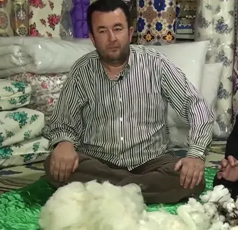

Ana sayfa / Hakkımızda
Babanın tezgâhından bugüne
Korkuteli'nin Kiremitli Mahallesi'nde, Belediye Caddesi üzerinde bir dükkân. Tabelada “Çeyiz Yorgan Dikim Evi” yazıyor; Korkuteli'de herkes ise “Yorgancı Ramazan” der.

Mesleği babasından öğrendi
Ramazan Hoşlar yorgancılığı, küçüklüğünden beri bu işi yapan babasının yanında öğrendi. Yünü açmayı, dolguyu eşit sermeyi, deseni kumaşa geçirmeyi babasının tezgâhında gördü. Bugün aynı işi Korkuteli'deki kendi dükkânında sürdürüyor.
Farklı desenlerle gelen haber
30 Nisan 2015'te Demirören Haber Ajansı'nın (DHA) Korkuteli muhabiri Adem Durmaz'ın haberi Günhaber'de yayımlandı. Haberde Ramazan ustanın, yoğun talep üzerine yorganlara siyasi parti logoları işlediği ve müşteri isteğine göre farklı desenler ürettiği anlatılıyordu. Ramazan usta o röportajda şöyle diyordu:
“Normalde bu meslek de bitiyor, biz de farklı desenler üreterek canlanması için çalışıyoruz.”
“İşimi severek yapıyorum. Artık müşteri yorganlarda farklı desene bakıyor.”
Bugün de dükkânda yorgana isim, tarih, logo ya da isteğe göre motif işleniyor (isteğe özel üretim).
Ekranda
Dükkân, FOX ekranlarında yayınlanan Sektörel Haber Merkezi programına da konu oldu. Programda Ramazan usta, dükkânında yün ve pamuğu göstererek işini anlattı. Bu sayfadaki dükkân fotoğrafları o çekimden alınmış karelerdir.
Bugün dükkânda
- El dikimi yün ve pamuk yorgan, işlemeli çeyiz yorganı
- Eski yorgan yenileme; yün döşek ve yastık kabartma
- Sünger döşek, minder, lastikli halı örtüsü dikimi
- Hazır ürünler: yastık, silikon yastık, battaniye, piknik hasırı ve daha fazlası
Döşek ve yastıklarını dükkâna getiremeyenler için usta, adet fazla olduğunda eşyaları adresten alıp kabartıyor, diktikten sonra geri teslim ediyor. Dükkânın Google'daki duyurusunda dediği gibi: “Evinizde kabaracak döşek ve yastıklarınız varsa getirin veya adet fazlaysa biz getirelim, kabartalım, size teslim edelim.”
Kaynaklar
- Günhaber, “Siyasi partilerin logosunu yorgana işliyor”, 30.04.2015 (DHA / Adem Durmaz, Korkuteli)
- Sektörel Haber Merkezi programı (FOX), dükkân çekimi — dükkânın paylaştığı video
- Yorgancı Ramazan Facebook sayfası ve dükkânın Google İşletme Profili gönderileri
- Instagram @ramazan_korkuteli_07
Dükkândan



Yeni dükkân fotoğrafları çok yakında. Dükkân kareleri: Sektörel Haber Merkezi çekimi.